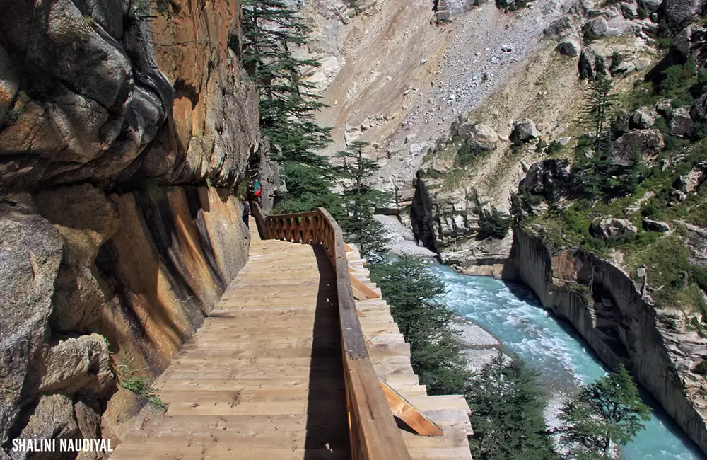
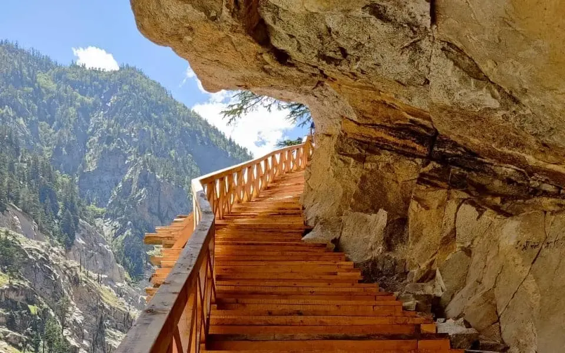
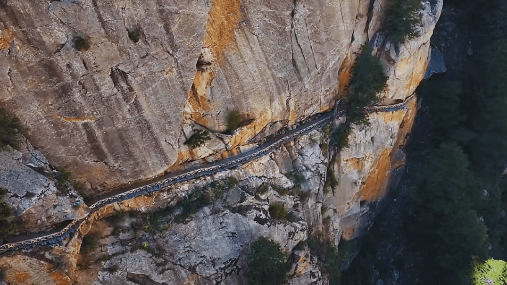
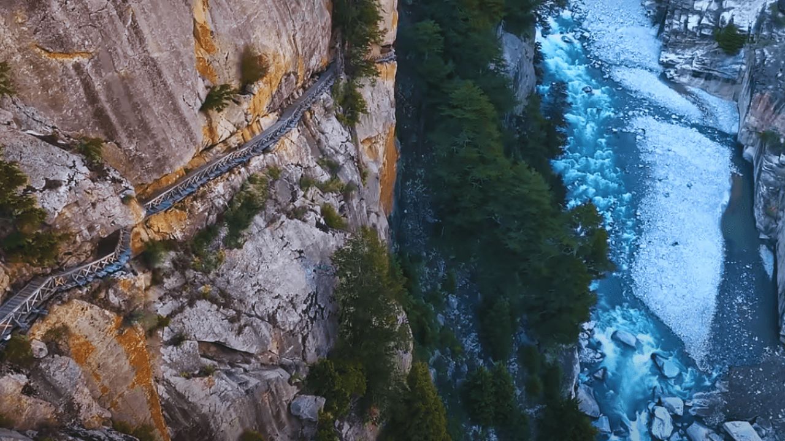

Gartang Gali is one of the most thrilling and historic trekking routes in Uttarakhand, located near Nelong Valley in the Uttarkashi district. Perched dramatically along steep rocky cliffs at an altitude of around 3,000 meters, this ancient wooden pathway was once a vital trade route connecting India with Tibet. Built over centuries and used by traders, this narrow trail carved into the mountains offers a breathtaking mix of history, adventure, and raw Himalayan beauty. After being closed for decades, Gartang Gali has recently reopened for tourists, allowing visitors to walk along this legendary path and relive a piece of ancient Indo-Tibetan heritage.
The pathway consists of wooden planks fixed against vertical cliffs, overlooking deep gorges and rugged landscapes, creating an unforgettable and slightly adrenaline-filled experience. The trek to Gartang Gali is relatively short but steep and scenic, surrounded by barren mountains and cold desert-like terrain similar to Ladakh. This place is perfect for adventure seekers, history enthusiasts, and photographers who want to explore something unique beyond typical hill stations. The combination of ancient architecture, dramatic cliffs, and silent Himalayan surroundings makes Gartang Gali truly one of a kind.
May to June offers pleasant weather and clear mountain views, while September to October provides crisp air and fewer crowds after the monsoon. Avoid July–August due to landslides and risky terrain, and winters (November–April) when heavy snowfall makes the route inaccessible.
Walking along the historic wooden cliff pathway, experiencing the ancient Indo-Tibetan trade route, trekking through rugged Himalayan terrain, photography of dramatic landscapes and deep gorges, and exploring nearby Nelong Valley for its cold desert beauty.
Entry permits are required (as it lies in a restricted border area), so plan in advance. Wear sturdy trekking shoes and carry warm clothing due to high altitude. Avoid risky behavior on narrow paths and follow safety guidelines. Carry water and essentials as facilities are limited. Ideal for physically fit travelers comfortable with heights.
"At Gartang Gali, where wooden paths cling to towering cliffs and history echoes through the mountains, every step feels like a journey through time — a place where courage meets curiosity, and the Himalayas reveal their most dramatic and untamed beauty."